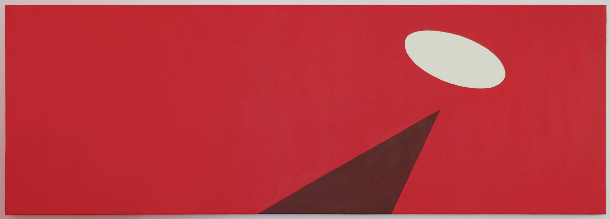
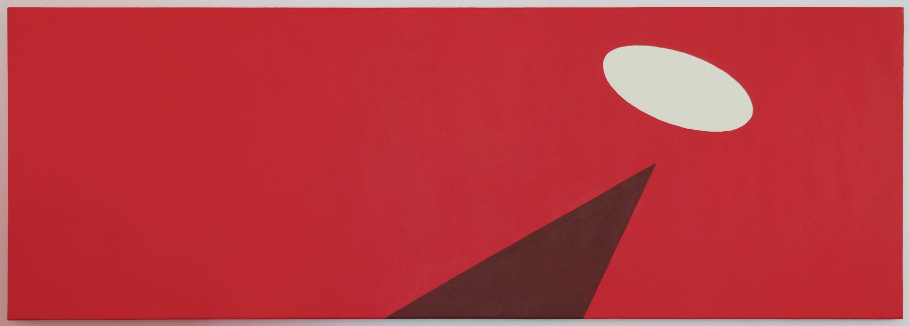
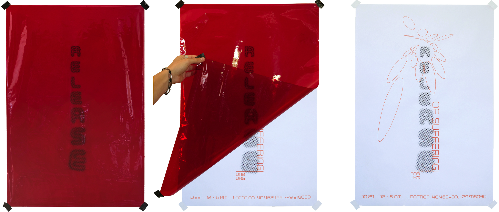

2020, 2ft x 6ft, acrylic on canvas.
2019, 20in x 30in, inkjet poster and cellophane.

Entanglement Puzzle, 2018, 3ft x 5ft x 3ft, rebar.
Rejection, Redaction, Redirection: Jono Coles and Harrison Smith's The Deposition, 2020. (click the image to read)